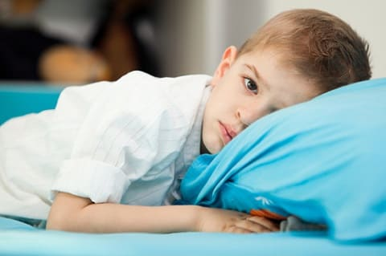
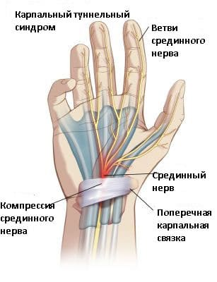
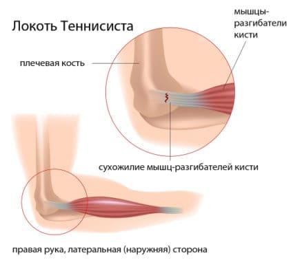
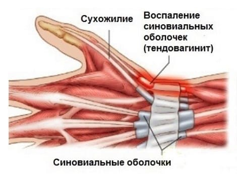

Боль, болезненность и иногда опухание суставов чаще всего встречаются во время периодов быстрого роста, например, резкого скачка роста в подростковом возрасте от 12 до 15 лет. Чаще всего страдают плечо, локоть, запястье, колено, лодыжка и тазобедренный сустав. Эти травмы вызваны как перенапряжением, так и неправильным использованием. Повторяющиеся нагрузки на сустав без разогрева, отдыха или тренировки могут привести к воспалению кости, мышц или сухожилий, обеспечивающих работу сустава. Например, одна из самых ранних форм травматического перенапряжения была названа «нинтендонит» — травматическое перенапряжение запястий и больших пальцев от игры в видеоигры.
Неправильное использование означает, что мышцы вынуждены действовать не свойственным им образом. Как правило, это происходит вследствие того, что ребенок недостаточно разогревается или тренируется. Распространенный пример — «теннисный локоть» или воспаление суставной сумки локтевого сустава. Если теннисист недостаточно сведущ в вопросах растяжки, разогрева, тренировки мышц и сухожилий локтевого сустава, вполне возможна вероятность развития локтя теннисиста. Если бы растущие суставы могли говорить, они бы сказали: «Не перенапрягай меня и используй меня правильно. Растягивай меня, разогревай и тренируй меня постепенно, так чтобы я становился сильнее, и ты мог использовать меня больше. Я буду работать лучше — и я не буду болеть». Чрезмерные тренировки также могут вызвать травматическое перенапряжение. Это непосредственно касается танцоров, которые могут тренировать одну группу мышц больше, чем другую, что приводит к нарушению баланса мышц вокруг сустава. Результат — неправильное напряжение сустава, заканчивающееся воспалением. Лечение этих повреждений, как правило, включает 2—3-недельный отдых, прикладывание льда к пораженному участку на 20 минут несколько раз в день каждый день, при необходимости — применение ибупрофена и осторожное возобновление активности по мере восстановления.
СИНДРОМ КАРПАЛЬНОГО КАНАЛА
Также известный как туннельный синдром или травматическое перенапряжение, синдром карпального канала все чаще и чаще диагностируется у детей старшего возраста и подростков. Он развивается в результате постоянно повторяющихся действий, которые напрягают ткани запястья. Свое название синдром получил потому, что нерв, который подвергается раздражению в этой ситуации, проходит через защитную оболочку, называемую карпальным каналом. Этот нерв очень тесно окружен тканями запястья, и повторяющееся напряжение этой области ведет к хроническому воспалению и невралгии.
Боль при синдроме карпального канала обычно появляется медленно. Она может постепенно нарастать на протяжении нескольких недель, месяцев или лет, прежде чем будут начаты попытки лечения. Признаком того, что у вашего ребенка синдром карпального канала, являются жалобы на стреляющую боль от внутренней стороны предплечья через кисть вниз к ладони. Ваш педиатр проведет специальное обследование для того, чтобы исключить возможность синдрома карпального канала.

Обычные виды деятельности, которые могут привести к синдрому карпального канала, — длительное печатание без надлежащих перерывов, чрезмерное использование джойстиков игровых приставок и некоторые виды спорта, при которых эта область сильно напрягается: например, пауэрлифтинг или участие в группе поддержки спортивных команд (трюки и поднятие тяжестей требуют напряжение на запястья). |
ЧТО ДЕЛАТЬ
Чтобы предотвратить и лечить синдром карпального канала у своего ребенка, помогите ему:
ТЕННИСНЫЙ ЛОКОТЬ
Это повреждение развивается, когда сухожилия на наружной стороне локтя воспаляются от постоянного использования. Хотя его часто приписывают неправильной технике удара теннисной ракеткой, он может быть результатом многочисленных движений запястьем при пользовании штопором, некоторыми садовыми инструментами или кистями. Мышцы, которые осуществляют движения запястья и руки, соединены с локтем, и неправильное напряжение их может привести к теннисному локтю.
СИМПТОМЫ
Признаки того, что у вашего ребенка может быть теннисный локоть, являются:

Несколько дней отдыха и лечения должны уменьшить боль. Тем не менее возвращение к деятельности, вызвавшей данную проблему, может вызвать рецидив, поэтому ребенку требуются несколько недель перерыва. Обратитесь к врачу, если боль не проходит после отдыха и лечения или если боль повторяется при возобновлении занятий. |
ЧТО ДЕЛАТЬ
Скорее всего, вашему ребенку придется сделать перерыв в занятиях теннисом или причиняющим боль видом спорта, чтобы повреждение могло пройти. Для ускорения реабилитации вы можете:
ТЕНДОВАГИНИТ
Подобно синдрому карпального канала, это травматическое перенапряжение, которое затрагивает обширную часть предплечья и запястья. Чрезмерное и повторяющееся напряжение сухожилий может привести к воспалению и боли в этом месте. Самый распространенный тип тендовагинита известен под названием тендовагинит де Кервена. Этот тип травмы обычно не обнаруживается до позднего подросткового или юношеского возраста. Боль, как правило, ощущается на достаточно большом участке, от предплечья до области большого пальца. Лечение тендовагинита всегда включает исключение или изменение вида деятельности, который вызвал травму. Иногда выздоровление могут ускорить специальные бандажи наряду с редким использованием противовоспалительных препаратов, таких как ибупрофен. Эти препараты всегда нужно принимать по назначению врача и недолго. Даже при использовании самых лучших видов лечения на реабилитацию после этого заболевания запястья могут уйти недели или даже месяцы.

Здоровье ребенка от докторов Сирс / Сирс У. и др.